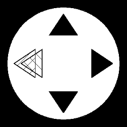

Image 1 shows vectographical test. It serves to examine border angle of stereoscopy. Test consists of external black circle and 4 triangles. Always one of the triangles - chosen at random by computer - is 3-dimensional. This triangle is shown as shifted in opposite direction for left and right eye, so it looks like located under or below surface of screen. There are 7 predefined angle of stereoscopy values: 0.5', 1', 2', 5', 10', 20', 50' (apostrofe means minutes of angle). Examiner can also choose any value of this angle.
During test patient points at this triangle which seems tree-dimensional using arrows on keyboard:
For accurency improvement it's possible to automatically repeat test. Default amount of repetitions is 4.
